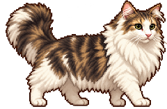
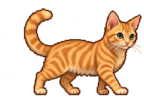

CHAPTER 01 / 30
客廳的小冒險
小魚乾 0 / 600:00
起點地圖：亮點是魚乾 · 紫色是家共同視角

曾萊恩你在操控飢餓 20 · 水分 85

曾辛巴電腦控制飢餓 28 · 水分 78
一隻踩住薄荷踏板，另一隻穿過門、碰亮星星開關。
一起才過得去1P
曾萊恩
白毛蓬蓬的可靠隊友
AD移動W跳S互動
2P
曾辛巴
橘色小老虎，出發！
←→移動↑跳↓互動
1P 萊恩
2P 辛巴
往上滑抬頭 · 左右拖曳轉頭 · 空白鍵跳 · E 互動 · C 切換